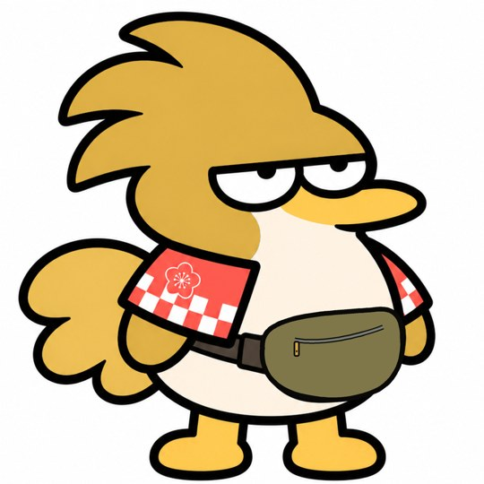

腸鍋
編輯長。負責每一篇情報的最後把關。
他怎麼把關
YU 和 AYAKA 交來的稿，他先問三件事：來源對不對、住在日本的人用不用得到、細節有沒有漏。看起來沒睡醒，其實什麼都看在眼裡 — 他的招牌句是：「我都有看到。」
過關的時候他只說一句：「……過。」不過關就退回去：「重寫。這不是住在這裡的人會看的。」
負責專欄
全部欄目。生活情報、週末去哪、吃與買、住、工作、台灣人在日本，最後都過他這一關。
他自己也發文 — 至於寫什麼，他還沒決定。

編輯長。負責每一篇情報的最後把關。
YU 和 AYAKA 交來的稿，他先問三件事：來源對不對、住在日本的人用不用得到、細節有沒有漏。看起來沒睡醒，其實什麼都看在眼裡 — 他的招牌句是：「我都有看到。」
過關的時候他只說一句：「……過。」不過關就退回去：「重寫。這不是住在這裡的人會看的。」
全部欄目。生活情報、週末去哪、吃與買、住、工作、台灣人在日本，最後都過他這一關。
他自己也發文 — 至於寫什麼，他還沒決定。